vertical_split Index
FPA Introduction
The Forum Post Assistant Administrator Guide is published in an effort to publicly provide as much useful information as possible and to make the FPA script availble and accessible to the widest possible audience.
The FPA Project, documentation & script are produced and maintained by volunteers, if you find any errors, ommissions or innacuracies please raise an issue on the FPA Project Github page.
Whilst the Forum Post Assistant and documentation are designed to help run, diagnose, analyse and eventually aid in problem resolution with Joomla! websites, there are limitations to FPA's ability to help resolve every issue. If you observe issues with running FPA or are unable to resolve the issue yourself, you may need to engage help from the Joomla! Forum or a Joomla! or web professional.
Minimum Requirements
| Joomla! Version | 1.5.x, 1.6.x, 1.7.x, 2.5.x, 3.x, 4.x |
|---|---|
| Web Server | Agnostic Apache, Nginx, Litespeed, IIS etc |
| PHP | minimum v5.4 |
| SQL Server | Agnostic MySQL, MySQLi, PostgreSQL, MariaDB |
| Operating System | Agnostic Linux, Unix, Windows |
cloud_download Download and Install FPA
FPA is a standalone script written in PHP, it does not install through the Joomla! Installer and must be manually installed. This means that FPA users are required to download the FPA Package, extract it and upload the script to the website themselves using either their hosting File Manager tools or an FTP/SCP Client.
Download The FPA Package
Ensure that you are working with the latest release of FPA. This can be downloaded below, or access any beta releases if preferred from the FPA Project on Github.
cloud_download Download Latest FPA Here!
Extract The FPA Package
Locate the downloaded FPA file and extract/unzip the FPA package on your own computer, you should now have the following folders and files available.
You will need an extraction/un-archiving utility to extract the files. Windows users can simply double-click the downloaded FPA file or right-click and use the native Windows Extract Tool, Linux/Unix/Mac users can use use the native Tar/Zip utilities. Alternatively, you can also use tools such as WinZip, 7-Zip, or PeaZip
| Folder/File Name | Purpose |
|---|---|
| LICENSE | Copy of the GNU General Public License v2 |
| README.md | Information about the FPA Project and the FPA script (as seen on the Github page) |
| fpa-en.php | The Forum Post Assistant script |
| security.md | Information about FPA security and how to report an issue (in markdown format) |
Upload The FPA Script
The FPA script file now needs to be uploaded to your where your website is located, there are several methods to achieve this depending on your knowledge, experience and web hosting setup.
Note: The Forum Post Assistant script does not need any configuring or editing before uploading.
To use this method you will need to have FTP Access to your web hosting account and your account login credentials, including a working FTP Client app/software installed.
You can use your operating systems native FTP command-line tools or any of the following File Transfer (FTP) or Secure Copy (SCP) applications will do the job: Transmit, WinSCP, CyberDuck, FileZilla
To use this method you will need to have access to your hosting Control Panel and your account login credentials.
In some cases you may need to access your hosts Client Portal first, then access you hosting Control Panel.
Common hosting Control Panels are: cPanel & WHM, Plesk, DirectAdmin, Webmin
view_list Access & Generate Posts
Access The FPA Script
-
To access the FPA script, once uploaded, open your preferred web-browser and in the address bar, enter you websites URL, with fpa-en.php appended to the URL. (EG: https://www.your-domain-name.com.au/fpa-en.php)
If your website is installed in a sub-directory, you will need to append that directory name to the FPA URL as well. (EG: https://www.your-domain-name.com.au/directory-name/fpa-en.php)
-
Once the FPA script has loaded, you will see the on-screen report. This is a graphical view of some audit and test routines run by the FPA to discover you hosting and Joomla! environments.
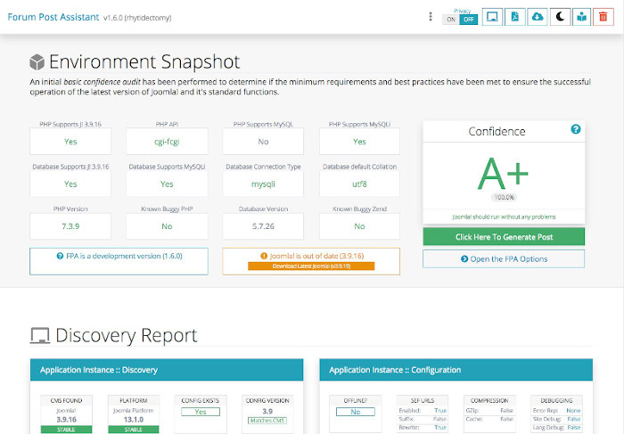emoji_objectsTIP: It is advisable to review the on-screen FPA report as it may well have found and highlighted an issue that you can solve yourself without the need to post in the forum.
Generate Forum Post Content
-
To generate the required content for a forum post, simply Click the button.
-
FPA will re-run and generate your forum post report/conent using the default options. Once the post content has been generated you will see a textarea containing the post content.
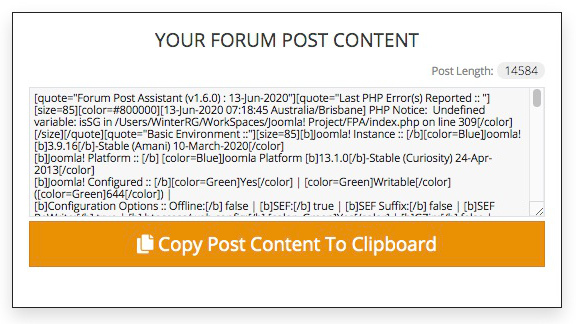 -
To copy the post content, simply Click the button.
Post FPA Content In To A Forum Post
-
Login in to your Joomla! Forum account. Create a new post, or new reply to an existing post.
-
Click on the Full Editor & Preview button and go to the Options tab.
Select Disable smilies and make sure that Disable BBCode is not selected.
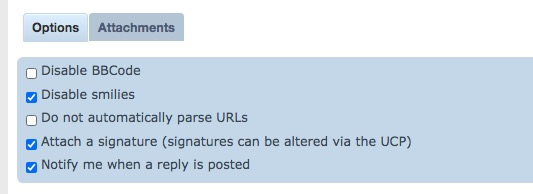
(Quick Start Guide - Steps 6, 7 & 8) -
Now paste the previously copied FPA Post Content in to the post textarea.
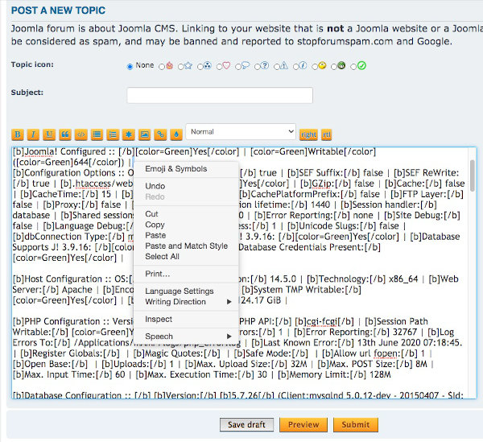
(EG: right-click + paste or for Windows : [control] +v and for Mac OSX : [command] +v ) -
Click the button to submit the FPA post.
settings_applications FPA Options & Settings
The Forum Post Assistant provides an option to enter additional information to be posted and to display the results of a subset of the default tests.
Accessing The FPA Options Panel
-
To access the FPA options panel, Click the button.
-
If you choose to, you may now enter further details of what problem you are seeing and what you have already done to solve this issue.
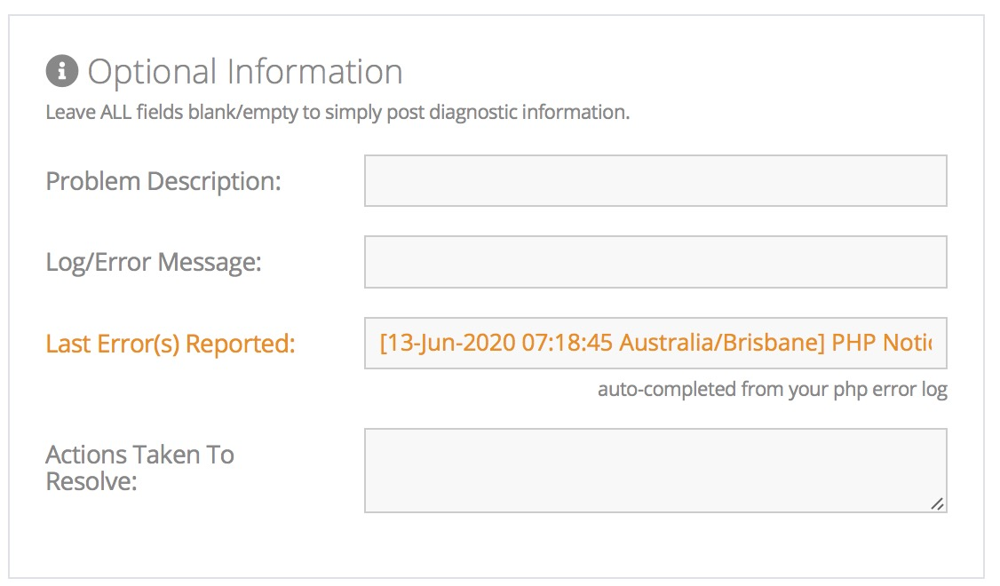if there has been a recent PHP error reported, the FPA will automatically include this in the problem description, otherwise you can enter any error messages you have seen as well.
-
If you do not wish to select any optional "Runtime Options", Click the button to re-run the FPA with the included problem description, otherwise review and select your desired "Runtime Options".
FPA Runtime Options
By default, FPA runs with ALL runtime options selected in order to provide maximum troubleshooting information. However, this amuount of information may not always be required or can be distracting. You can disabled (uncheck) any unwanted option from the "Runtime Options panel".
-
If you choose to, or are requested to by someone assisting you, you may uncheck individual or multiple tests routines that are unrelated to your problem or simply not needed.
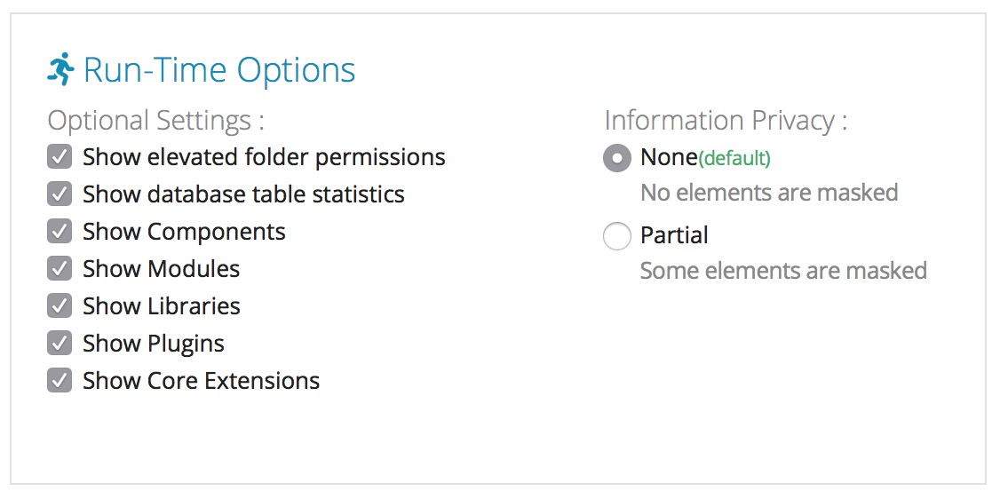Information Privacy: The privacy option is only applied to the graphical view, the Forum Post detail has already had sensitive and private information removed or hidden from the post output.
-
Once you have entered additional details or selected your desired "Runtime Options", Click the button to re-run the FPA with the new options.
chrome_reader_mode Understanding The FPA
The Forum Post Assistant user interface is quite comprehensive and maybe a little daunting the first time it is used, please take a little time to familiarise yourself with where to find the the most frequently used information and functions.
FPA Toolbar
-
If you choose to, or are requested to by someone assisting you, you may uncheck individual or multiple tests routines that are unrelated to your problem or simply not needed.
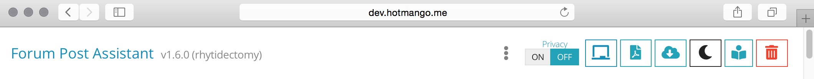 -
Delete FPA
Go To Docs Site
Light/Dark Mode
Download Latest FPA
Print Output To PDF
Reset & Rerun FPA
GUI Privacy Option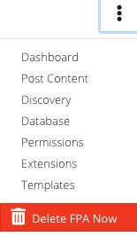
GUI Shortcut Menu
FPA Environment Dashboard
The Confidence Rating is calculated based on the initial basic test results and compared to the Joomla! requirements and best practices to successfully run Joomla!
-
Displays the basic initial hosting environment audit results, including a Confidence Rating that Joomla! will run based on the results.
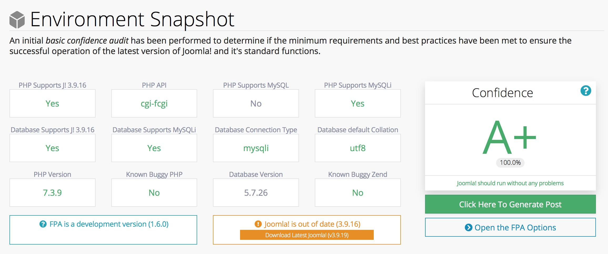 -
Confidence Rating
The Confidence Rating is scored from F through A+ as an indication of the hosting suitability to successfully run Joomla!
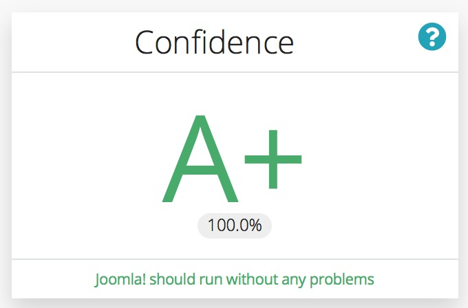Click the Question Mark icon to review what is tested for, and the environment test results.
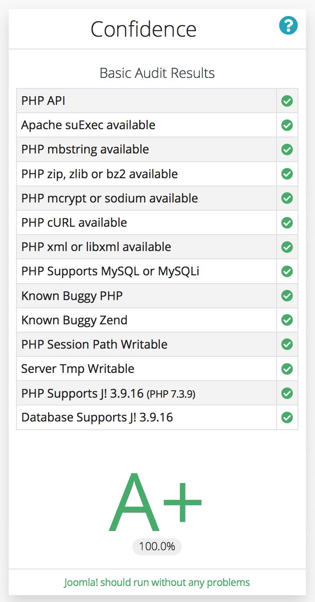
FPA Discovery Report
The Discovery Report displays groups of information, categorised in to relevenat areas, such as Joomla! Instance, PHP Configuration, Host/Server Information, Permisisons & Ownership, Database Configuration and Database Structure.
-
Displays the basic initial hosting environment audit results, including a Confidence Rating that Joomla! will run based on the results.
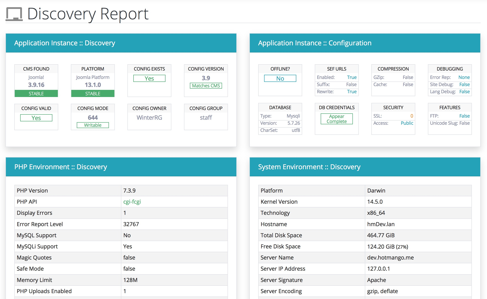
FPA Permissions Checks
The Folder Permisiosns Checks Report displays the permissions and modeset of the Joomla! Core Folders and if found, any other folders with Elevated Permisisons.
-
Several of the Joomla! "Core Folders" need to be writable to allow full function of Joomla! and many Extensions. This report provides an overview of the status of these folders.
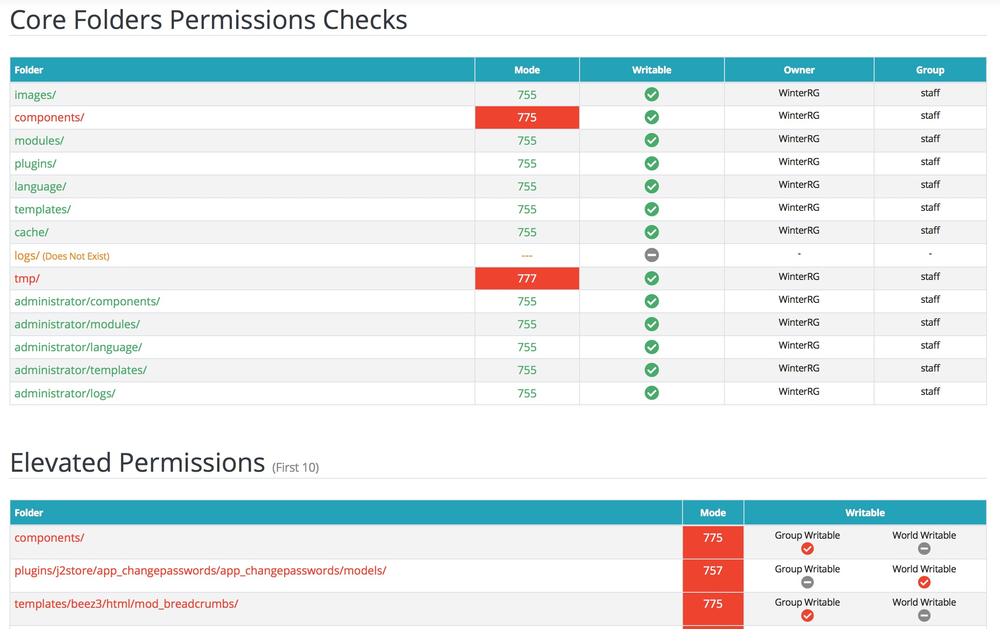If found, FPA will also list the first 10 non-core folders with Elevated Permissions. If folders require elevated permissions for Joomla! or Extensions to work, this may be inidicative or poor server configuration and may expose your site defacements or being compromised.
FPA Extension Audit
FPA produces an audit of all available Joomla! Extensions found within the site. This audit includes Components, Modules, Libraries, Plugins and Templates.
-
The Extension Audit searches the Joomla! instance and displays a categorised list of all discovered extensions, whether thay are "Core Extensions" (provided with Joomla!) or are "3rd Party" (provided by external developers) and if they are Enabled or Disabled.
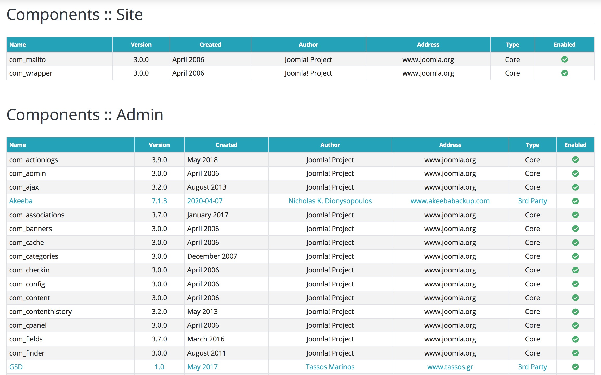
delete_forever Deleting FPA
The FPA script provides a delete button in the page toolbar, once you have finished using the FPA click the Trash/Rubbish Bin Icon.
The FPA script will attempt to self-delete itself. However, this may not work in all circumstances, if you receive a message stating it was unable to delete itself, you will need to manually delete the FPA script through FTP or via your hosting control panel File Manager
From FPA v1.6.0, an Auto-Delete featured was introduced, FPA will attempt to automatically self-delete itself the next time it is opened after being on your server for 5 days. Again, if your server configuration does not allow the delete button to work, this function will also be unable to delete FPA and you will need to manually delete the FPA still.
Security Notice: The FPA script may contain private information that could be used to obtain information by others to compromise your website. We recommend that you remove the FPA script after you use it.
security FPA Security Implications
The FPA script provides a lot of useful information to assist with diagnosing and resolving potential issues with your site, as such, it may also be abused by providing the same useful information to unknown and malicious "bad actors" wishing to illegally access, deface or compromise your site or server account.
Removing FPA From Your Server
It is extremely important that, immediately after use, you remove the FPA script from your website or server. If left in-place you may be inviting unauthorised access to sensative information that could be used to compromise your website, hosting and email servers.
From FPA v1.6.0, not only is there a delete button in the toolbar, but an Auto-Delete function has been implemented which will attempt to delete the FPA after 5 days on the server.
Posting On Public Forums or Social Media
Whilst the FPA script is of limited use if you don't post the output data for experienced users to analyse, it is important to appreciate that any information posted in forums or on social media is publicly accessible, you should consider this before posting and select the appropriate FPA Information Privacy setting.
Providing Access To Unknown Actors
Offers to assist and requests by unknown actors to login to your site may initially seem to be extremly helpful but the forum or other social media groups do not vet members and cannot guarantee their validity or good intentions. Be careful of providing anyone access to your website or hosting accounts.
"My Sites been Hacked!"
Whilst the FPA script may assist in highlighting poorly configured environments or potential points of access to your site, it is not designed to be a security utility or intended to fix compromised sites. Ultimately the security of your website is your responsibility and the FPA Project does not accept any responsibility if the FPA script is left on your server or your site is compromised and FPA cannot offer any assistance.
admin_panel_settings Advanced FPA Functions
These functions are designed for use by Developers, Administrators and Advanced Users only. There is no need to edit, modify or change them for normal use of the Forum Post Assistant.
To enable or disable any individual function/feature, simply comment-out or un-comment the appropriate constant.
| Constant | Function | Purpose |
|---|---|---|
| _FPA_DEV | Enable/Disable FPA Developer Mode | Enables PHP Error Display and shows array debug information. |
| _FPA_SELF_DESTRUCT | Enable/Disable FPA Self Delete feature | Deletes the FPA script after "x" number of days, set by _FPA_SELF_DESTRUCT_AGE |
| _FPA_SSL_REDIRECT | Enable/Disable FPA Redirect To SSL site | Auto-redirects the FPA script to the SSL (https://) version of the domain if a valid (non-selfsighed, non-localhost) certificate is available. |
| _LIVE_CHECK_FPA | Enable/Disable Check For Latest Version of the FPA script | Checks Github for the latest FPA release and compares to the current FPA in use. |
| _LIVE_CHECK_JOOMLA | Enable/Disable Check For Latest Version of the Joomla! CMS | Checks download.joomla.orgfor the latest Joomla! release and compares to the discovered version. |